This vignette demonstrates the pmxhelpr forest plot
workflow for visualizing the univariate impact of covariate effects in a
model on the integrated model output (e.g. exposure metrics, response
metrics, ratio to reference)
The pipeline mirrors the VPC and dose-proportionality workflows. Where to start depends on the data in hand:
-
Wide simulation output (one row per scenario per
replicate, metrics as columns): reshape it with
df_forest_preprocess(), then continue below. -
Long simulation output (one row per scenario per
replicate per): call
plot_forest(draws, metric = )for a single plot, ordf_forest()once and pass its result toplot_forest()for several metrics or layouts. -
Summary output: wrap it as a
forest_statsobject and callplot_build_forest()(see “Building aforest_statsby hand” in?plot_build_forest).
options(scipen = 999, rmarkdown.html_vignette.check_title = FALSE)
library(pmxhelpr)
library(dplyr, warn.conflicts = FALSE)
library(ggplot2, warn.conflicts = FALSE)Background
A univariate forest plot is a graphical model application used to visualize the impact of intrinsic and extrinsic participant factors (i.e., covariates) on integrated model outputs (e.g., exposure metrics, response metrics, ratios of exposure or response) under test conditions relative to reference conditions.
The typical workflow involves establishing the reference scenario (i.e., the vector of covariates at the reference level for each individual covariate) and test scenarios, each differing in only one covariate value from the reference scenario.
The model is then applied to generate predictions under each scenario with uncertainty and/or variability arising from unique sets of fixed effects model parameters in each simulation sampled from the uncertainty in parameter estimation (i.e., sampled from a multivariate normal distribution with the mean vector set to the vector of final fixed effects parameter estimates).
The output from the simulation is a distribution of “typical” (fixed effects only) model outputs, from which the median (50th percentile) is interpreted as the estimate of central tendency and quantiles (e.g., 2.5th-97.5th, 5th-95th) are interpreted as the confidence interval around the central tendency (e.g., 95% CI, 90% CI)
The bioequivalence criteria (0.8 to 1.25) provide a conventional reference range for interpretation of covariate impact on exposure.
Data
This vignette uses two internal datasets built using the internal
data_sad dataset and the internal PK model
(pkmodel).
-
data_sad_pkforest_sim: raw exposure metric simulation output for N = 500 replicates. Dosing of 200 mg once daily to steady state. Exposure metrics are summarized to one row per scenario (M) per replicate (N) resulting in a dataset of length M x N (6 scenarios * 500 replicates = 3000). Example input dataset fordf_forest_preprocess()
glimpse(data_sad_pkforest_sim)
#> Rows: 3,000
#> Columns: 9
#> $ ID <dbl> 1, 1, 1, 1, 1, 1, 1, 1, 1, 1, 1, 1, 1, 1, 1, 1, 1, 1, 1, 1, 1, 1,…
#> $ SIM <dbl> 1, 2, 3, 4, 5, 6, 7, 8, 9, 10, 11, 12, 13, 14, 15, 16, 17, 18, 19…
#> $ WTBL <dbl> 70, 70, 70, 70, 70, 70, 70, 70, 70, 70, 70, 70, 70, 70, 70, 70, 7…
#> $ FOOD <dbl> 0, 0, 0, 0, 0, 0, 0, 0, 0, 0, 0, 0, 0, 0, 0, 0, 0, 0, 0, 0, 0, 0,…
#> $ DOSE <dbl> 200, 200, 200, 200, 200, 200, 200, 200, 200, 200, 200, 200, 200, …
#> $ CMAX <dbl> 844.8669, 822.4267, 868.3378, 773.0414, 913.1536, 612.5367, 1002.…
#> $ CMIN <dbl> 200.0502, 272.0832, 258.2627, 157.6926, 181.3835, 213.1723, 202.5…
#> $ AUC <dbl> 12006.29, 13463.48, 13488.21, 10383.56, 12138.47, 10439.84, 12970…
#> $ CAVG <dbl> 500.2621, 560.9784, 562.0089, 432.6482, 505.7697, 434.9935, 540.4…-
data_sad_pkforest: pre-processed simulated exposure metrics. Exposure metrics are gathered from columns into rows, one row per scenario (M) per replicate (N) per metric (K), resulting in a dataset of length M x N x K (6 scenarios * 500 replicates * 8 metrics = 24000). Example output dataset fromdf_forest_preprocessand example input dataset fordf_forest().
glimpse(data_sad_pkforest)
#> Rows: 24,000
#> Columns: 9
#> $ ID <dbl> 1, 1, 1, 1, 1, 1, 1, 1, 1, 1, 1, 1, 1, 1, 1, 1, 1, 1, 1, 1, …
#> $ SIM <dbl> 1, 1, 1, 1, 1, 1, 1, 1, 2, 2, 2, 2, 2, 2, 2, 2, 3, 3, 3, 3, …
#> $ WTBL <dbl> 70, 70, 70, 70, 70, 70, 70, 70, 70, 70, 70, 70, 70, 70, 70, …
#> $ FOOD <dbl> 0, 0, 0, 0, 0, 0, 0, 0, 0, 0, 0, 0, 0, 0, 0, 0, 0, 0, 0, 0, …
#> $ DOSE <dbl> 200, 200, 200, 200, 200, 200, 200, 200, 200, 200, 200, 200, …
#> $ metric <chr> "CMAX", "CMIN", "AUC", "CAVG", "CMAXRATIO", "CMINRATIO", "AU…
#> $ value <dbl> 844.8669, 200.0502, 12006.2897, 500.2621, 1.0000, 1.0000, 1.…
#> $ cov_name <chr> "Reference", "Reference", "Reference", "Reference", "Referen…
#> $ cov_level <chr> "Reference", "Reference", "Reference", "Reference", "Referen…Relevant variables in these datasets include: + ID
identifies the scenarios (1 = reference, 2 = fed, 3 = 50 kg, 4 = 60 kg,
5 = 80 kg, 6 = 90 kg) + SIM is the replicate counter +
metric holds the the exposure metric names, which include
both absolute (CMAX, CMIN, AUC,
CAVG) and test/reference ratios (CMAXRATIO,
CMINRATIO, AUCRATIO, CAVGRATIO) +
value holds the exposure metric values +
cov_name holds the name of the univariate covariate varied
(Reference, FOOD, WTBL) +
cov_level holds the level label of the univariate covariate
varied (Reference, Fed, 50 kg,
60 kg, 80 kg, 90 kg)
It also carries a cov_level_ref attribute naming each
covariate’s reference.
Preprocessing with df_forest_preprocess()
df_forest_preprocess() is the entry point from a
simulation output to the forest plot pipeline. It reads the scenario
structure from the covariate columns in the raw simulation output.
Key arguments are as follows:
-
data: data.frame, simulation output dataset for processing -
metric_vars: character vector, names of metric variables indata -
cov_vars: character vector, names of covariate variables indata -
cov_val_ref: named vector, covariate name: reference value pairs defining the reference conditions -
cov_labels: list, covariate value:label pairs or labeling function
simsum <- df_forest_preprocess(
data_sad_pkforest_sim,
metric_vars = c("CMAX", "CMIN", "AUC", "CAVG"),
cov_vars = c("FOOD", "WTBL"),
cov_val_ref = c(FOOD = 0, WTBL = 70),
cov_labels = list(
FOOD = c("0" = "Fasted", "1" = "Fed"),
WTBL = function(x) paste(x, "kg")
)
)
glimpse(simsum)
#> Rows: 24,000
#> Columns: 9
#> $ ID <dbl> 1, 1, 1, 1, 1, 1, 1, 1, 1, 1, 1, 1, 1, 1, 1, 1, 1, 1, 1, 1, …
#> $ SIM <dbl> 1, 1, 1, 1, 1, 1, 1, 1, 2, 2, 2, 2, 2, 2, 2, 2, 3, 3, 3, 3, …
#> $ WTBL <dbl> 70, 70, 70, 70, 70, 70, 70, 70, 70, 70, 70, 70, 70, 70, 70, …
#> $ FOOD <dbl> 0, 0, 0, 0, 0, 0, 0, 0, 0, 0, 0, 0, 0, 0, 0, 0, 0, 0, 0, 0, …
#> $ DOSE <dbl> 200, 200, 200, 200, 200, 200, 200, 200, 200, 200, 200, 200, …
#> $ metric <chr> "CMAX", "CMIN", "AUC", "CAVG", "CMAXRATIO", "CMINRATIO", "AU…
#> $ value <dbl> 844.8669, 200.0502, 12006.2897, 500.2621, 1.0000, 1.0000, 1.…
#> $ cov_name <chr> "Reference", "Reference", "Reference", "Reference", "Referen…
#> $ cov_level <chr> "Reference", "Reference", "Reference", "Reference", "Referen…Every column that is not a metric passes through, so simulation
inputs such as ID, WTBL, FOOD and
DOSE stay available for filtering and faceting
downstream.
This function call is exactly how the shipped dataset
data_sad_pkforest is built, so the two are the same frame.
The rest of the vignette works from simsum to follow the
workflow which would be used in a real worked forest plot workflow.
identical(simsum, data_sad_pkforest)
#> [1] TRUEEach covariate’s reference label is attached as an attribute, ready
to pass to df_forest() as cov_level_ref.
ref_levels <- attr(simsum, "cov_level_ref")
ref_levels
#> FOOD WTBL
#> "Fasted" "70 kg"Reference Conditions
The reference condition is defined by the cov_val_ref
argument, which takes a vector of covariate name:reference value pairs.
df_forest_preprocess() labels cov_name and
cov_level as "Reference" (the
cov_name_ref argument) in the rows of the dataset with the
reference values of every covariate.
ref <- filter(simsum, cov_name == "Reference")
unique(ref$cov_name)
#> [1] "Reference"
unique(ref$cov_level)
#> [1] "Reference"
unique(ref$FOOD)
#> [1] 0
unique(ref$WTBL)
#> [1] 70Every other scenario must differ from the reference in a univariate
manner (i.e., by exactly one covariate value), and that covariate
becomes the rows cov_name, with its labeled value as
cov_level. No scenario identifier column or separate lookup
table is needed, as the covariate combination in the dataset defines the
scenario.
Matching is on the character form of the value, so a numeric column and a character reference value still line up. A scenario that varies two covariates at once has no single covariate to attribute the change to, so it aborts. Factorial designs are out of scope.
factorial_sim <- data_sad_pkforest_sim
factorial_sim$FOOD[factorial_sim$ID == 6] <- 1 # 90 kg *and* fed
df_forest_preprocess(
factorial_sim,
metric_vars = "AUC",
cov_vars = c("FOOD", "WTBL"),
cov_val_ref = c(FOOD = 0, WTBL = 70)
)
#> Error in `df_forest_preprocess()`:
#> ! every non-reference scenario must differ from the reference in exactly one covariate; these differ in more than one: FOOD = 1, WTBL = 90. `df_forest_preprocess()` does not support factorial scenario designs.Ratios
Test-to-Reference ratios are derived automatically for each metric
producing a within-replicate test/reference ratio named
<metric><ratio_suffix>.
Because the parameter set is shared across scenarios within a replicate, uncertainty common to both test and reference cancels in the ratio.
ratio = FALSE emits the absolute metrics alone, and
ratio_suffix renames the ratio metrics.
df_forest_preprocess(
data_sad_pkforest_sim,
metric_vars = "AUC",
cov_vars = c("FOOD", "WTBL"),
cov_val_ref = c(FOOD = 0, WTBL = 70),
ratio_suffix = "RAT"
) %>%
distinct(metric)
#> metric
#> 1 AUC
#> 2 AUCRATLabels
cov_labels accepts a list of key:value pairs to define
labels for each covariate, one entry per covariate, or a labeling
function applied to the values. A value with no label falls back to its
character form with a warning, which is what happens below for the fed
level.
df_forest_preprocess(
data_sad_pkforest_sim,
metric_vars = "AUC",
cov_vars = c("FOOD", "WTBL"),
cov_val_ref = c(FOOD = 0, WTBL = 70),
cov_labels = list(FOOD = c("0" = "Fasted"))
) %>%
distinct(cov_name, cov_level)
#> Warning: `cov_labels` has no entry for these covariate values: FOOD = 1. They
#> are labeled by their character value.
#> cov_name cov_level
#> 1 Reference Reference
#> 2 FOOD 1
#> 3 WTBL 50
#> 4 WTBL 60
#> 5 WTBL 80
#> 6 WTBL 90Computing summary statistics with df_forest()
df_forest() is the summary function which produces a
class tagged object ready for rendering as a forest plot.
The only required argument is data. The column-name
arguments default to the conventions df_forest_preprocess()
emits:
-
metric_name_var: column of metric names, defaultmetric -
metric_value_var: column of metric values, defaultvalue -
cov_name_var: column of covariate names, defaultcov_name -
cov_level_var: column of covariate levels, defaultcov_level
Every row of a (metric, covariate, level) group is
aggregated, so no replicate index column (e.g., SIM) is
needed.
forest_obj <- df_forest(simsum)
forest_obj
#> <forest_stats>
#> stats: 48 rows x 13 columns
#> config: metric_name_var = metric, metric_value_var = value, cov_name_var = cov_name, cov_level_var = cov_level, ci = 0.9, sigdigits = 3, cov_name_ref = Reference, cov_level_ref = NULL
#>
#> head(stats, 3):
#> metric cov_name cov_level est lo hi n est_label
#> 1 CMAX Reference Reference 861.3751 741.2410 1005.205 500 861
#> 2 CMAX FOOD Fed 1465.1054 1180.1763 1830.221 500 1465
#> 3 CMAX WTBL 50 kg 1118.5361 936.4438 1306.034 500 1119
#> lo_label hi_label ci_label is_ref layout
#> 1 741 1005 861 (741, 1005) TRUE consolidated
#> 2 1180 1830 1465 (1180, 1830) FALSE both
#> 3 936 1306 1119 (936, 1306) FALSE both
#>
#> Use `x$stats` for the full data.frame.The stats slot holds one row per plotted point, in
plotting order: est, lo, and hi,
their formatted labels (ci_label combines them for tables),
the draw count n, is_ref for the reference
rows, and layout (see Where the reference row is
drawn). Edit est_label, lo_label, or
hi_label to change the plotted text.
forest_obj$stats
#> metric cov_name cov_level est lo hi n
#> 1 CMAX Reference Reference 861.3750994 741.2410080 1005.2045867 500
#> 2 CMAX FOOD Fed 1465.1054176 1180.1762553 1830.2213691 500
#> 3 CMAX WTBL 50 kg 1118.5361190 936.4437765 1306.0338117 500
#> 4 CMAX WTBL 60 kg 971.2402766 824.2664189 1129.1458559 500
#> 5 CMAX WTBL 80 kg 776.4423820 669.8907596 916.7885283 500
#> 6 CMAX WTBL 90 kg 708.0895493 608.5112952 841.5354644 500
#> 7 CMIN Reference Reference 219.0686436 157.6645590 287.2615988 500
#> 8 CMIN FOOD Fed 818.1375026 573.4613217 1128.5121716 500
#> 9 CMIN WTBL 50 kg 269.1555134 187.3158389 375.0697115 500
#> 10 CMIN WTBL 60 kg 241.3125053 172.7303956 327.6239892 500
#> 11 CMIN WTBL 80 kg 200.8846609 143.8317810 261.7982474 500
#> 12 CMIN WTBL 90 kg 185.3940547 135.0522034 249.6487099 500
#> 13 AUC Reference Reference 12540.1499642 10481.3622800 14629.1085550 500
#> 14 AUC FOOD Fed 28815.2687976 23413.5097890 35996.7028666 500
#> 15 AUC WTBL 50 kg 16187.3034385 13481.2322820 19372.8077113 500
#> 16 AUC WTBL 60 kg 14110.3919678 11835.1395435 16475.0464049 500
#> 17 AUC WTBL 80 kg 11328.0537406 9468.8424024 13333.9102429 500
#> 18 AUC WTBL 90 kg 10337.0855959 8685.3364436 12300.9044300 500
#> 19 CAVG Reference Reference 522.5062485 436.7234283 609.5461898 500
#> 20 CAVG FOOD Fed 1200.6361999 975.5629079 1499.8626194 500
#> 21 CAVG WTBL 50 kg 674.4709766 561.7180118 807.2003213 500
#> 22 CAVG WTBL 60 kg 587.9329987 493.1308143 686.4602669 500
#> 23 CAVG WTBL 80 kg 472.0022392 394.5351001 555.5795935 500
#> 24 CAVG WTBL 90 kg 430.7118998 361.8890185 512.5376846 500
#> 25 CMAXRATIO Reference Reference 1.0000000 1.0000000 1.0000000 500
#> 26 CMAXRATIO FOOD Fed 1.7029977 1.4446801 2.0214743 500
#> 27 CMAXRATIO WTBL 50 kg 1.2976226 1.2166269 1.3887267 500
#> 28 CMAXRATIO WTBL 60 kg 1.1265144 1.0938047 1.1622069 500
#> 29 CMAXRATIO WTBL 80 kg 0.9019662 0.8779759 0.9253633 500
#> 30 CMAXRATIO WTBL 90 kg 0.8234991 0.7828402 0.8642331 500
#> 31 CMINRATIO Reference Reference 1.0000000 1.0000000 1.0000000 500
#> 32 CMINRATIO FOOD Fed 3.8487735 2.8681897 4.9713206 500
#> 33 CMINRATIO WTBL 50 kg 1.2426439 1.0660589 1.4360467 500
#> 34 CMINRATIO WTBL 60 kg 1.1051264 1.0304508 1.1806703 500
#> 35 CMINRATIO WTBL 80 kg 0.9164507 0.8656326 0.9727320 500
#> 36 CMINRATIO WTBL 90 kg 0.8481978 0.7619381 0.9482848 500
#> 37 AUCRATIO Reference Reference 1.0000000 1.0000000 1.0000000 500
#> 38 AUCRATIO FOOD Fed 2.3164392 2.0044530 2.6485638 500
#> 39 AUCRATIO WTBL 50 kg 1.2916101 1.1870389 1.4069578 500
#> 40 AUCRATIO WTBL 60 kg 1.1243808 1.0817207 1.1693195 500
#> 41 AUCRATIO WTBL 80 kg 0.9034349 0.8732801 0.9342181 500
#> 42 AUCRATIO WTBL 90 kg 0.8260290 0.7749029 0.8797958 500
#> 43 CAVGRATIO Reference Reference 1.0000000 1.0000000 1.0000000 500
#> 44 CAVGRATIO FOOD Fed 2.3164392 2.0044530 2.6485638 500
#> 45 CAVGRATIO WTBL 50 kg 1.2916101 1.1870389 1.4069578 500
#> 46 CAVGRATIO WTBL 60 kg 1.1243808 1.0817207 1.1693195 500
#> 47 CAVGRATIO WTBL 80 kg 0.9034349 0.8732801 0.9342181 500
#> 48 CAVGRATIO WTBL 90 kg 0.8260290 0.7749029 0.8797958 500
#> est_label lo_label hi_label ci_label is_ref layout
#> 1 861 741 1005 861 (741, 1005) TRUE consolidated
#> 2 1465 1180 1830 1465 (1180, 1830) FALSE both
#> 3 1119 936 1306 1119 (936, 1306) FALSE both
#> 4 971 824 1129 971 (824, 1129) FALSE both
#> 5 776 670 917 776 (670, 917) FALSE both
#> 6 708 609 842 708 (609, 842) FALSE both
#> 7 219 158 287 219 (158, 287) TRUE consolidated
#> 8 818 573 1129 818 (573, 1129) FALSE both
#> 9 269 187 375 269 (187, 375) FALSE both
#> 10 241 173 328 241 (173, 328) FALSE both
#> 11 201 144 262 201 (144, 262) FALSE both
#> 12 185 135 250 185 (135, 250) FALSE both
#> 13 12500 10500 14600 12500 (10500, 14600) TRUE consolidated
#> 14 28800 23400 36000 28800 (23400, 36000) FALSE both
#> 15 16200 13500 19400 16200 (13500, 19400) FALSE both
#> 16 14100 11800 16500 14100 (11800, 16500) FALSE both
#> 17 11300 9500 13300 11300 (9500, 13300) FALSE both
#> 18 10300 8700 12300 10300 (8700, 12300) FALSE both
#> 19 523 437 610 523 (437, 610) TRUE consolidated
#> 20 1201 976 1500 1201 (976, 1500) FALSE both
#> 21 674 562 807 674 (562, 807) FALSE both
#> 22 588 493 686 588 (493, 686) FALSE both
#> 23 472 395 556 472 (395, 556) FALSE both
#> 24 431 362 513 431 (362, 513) FALSE both
#> 25 1.00 1.00 1.00 1.00 (1.00, 1.00) TRUE consolidated
#> 26 1.70 1.44 2.02 1.70 (1.44, 2.02) FALSE both
#> 27 1.30 1.22 1.39 1.30 (1.22, 1.39) FALSE both
#> 28 1.13 1.09 1.16 1.13 (1.09, 1.16) FALSE both
#> 29 0.90 0.88 0.93 0.90 (0.88, 0.93) FALSE both
#> 30 0.82 0.78 0.86 0.82 (0.78, 0.86) FALSE both
#> 31 1.00 1.00 1.00 1.00 (1.00, 1.00) TRUE consolidated
#> 32 3.85 2.87 4.97 3.85 (2.87, 4.97) FALSE both
#> 33 1.24 1.07 1.44 1.24 (1.07, 1.44) FALSE both
#> 34 1.11 1.03 1.18 1.11 (1.03, 1.18) FALSE both
#> 35 0.92 0.87 0.97 0.92 (0.87, 0.97) FALSE both
#> 36 0.85 0.76 0.95 0.85 (0.76, 0.95) FALSE both
#> 37 1.00 1.00 1.00 1.00 (1.00, 1.00) TRUE consolidated
#> 38 2.32 2.00 2.65 2.32 (2.00, 2.65) FALSE both
#> 39 1.29 1.19 1.41 1.29 (1.19, 1.41) FALSE both
#> 40 1.12 1.08 1.17 1.12 (1.08, 1.17) FALSE both
#> 41 0.90 0.87 0.93 0.90 (0.87, 0.93) FALSE both
#> 42 0.83 0.77 0.88 0.83 (0.77, 0.88) FALSE both
#> 43 1.00 1.00 1.00 1.00 (1.00, 1.00) TRUE consolidated
#> 44 2.32 2.00 2.65 2.32 (2.00, 2.65) FALSE both
#> 45 1.29 1.19 1.41 1.29 (1.19, 1.41) FALSE both
#> 46 1.12 1.08 1.17 1.12 (1.08, 1.17) FALSE both
#> 47 0.90 0.87 0.93 0.90 (0.87, 0.93) FALSE both
#> 48 0.83 0.77 0.88 0.83 (0.77, 0.88) FALSE bothAdjusting the summary statistics
The summary can be customized with:
-
ci: confidence interval to return, default0.9based on the interval recommended for bioequivalence assessment. -
sigdigits: number of significant digits in the label columns, default3. Digits are counted on the median estimate of each metric, so every value of a metric shares one count of decimal places (0.90and2.32for a ratio).
df_forest(simsum, ci = 0.95, sigdigits = 2)
#> <forest_stats>
#> stats: 48 rows x 13 columns
#> config: metric_name_var = metric, metric_value_var = value, cov_name_var = cov_name, cov_level_var = cov_level, ci = 0.95, sigdigits = 2, cov_name_ref = Reference, cov_level_ref = NULL
#>
#> head(stats, 3):
#> metric cov_name cov_level est lo hi n est_label
#> 1 CMAX Reference Reference 861.3751 717.3157 1036.208 500 860
#> 2 CMAX FOOD Fed 1465.1054 1133.0620 1878.886 500 1470
#> 3 CMAX WTBL 50 kg 1118.5361 910.1290 1366.828 500 1120
#> lo_label hi_label ci_label is_ref layout
#> 1 720 1040 860 (720, 1040) TRUE consolidated
#> 2 1130 1880 1470 (1130, 1880) FALSE both
#> 3 910 1370 1120 (910, 1370) FALSE both
#>
#> Use `x$stats` for the full data.frame.Reference
Reference rows are identified by cov_name_ref, the value
of cov_name that marks the reference condition. The default
"Reference" matches the df_forest_preprocess()
output, but the reference can be called anything, as in the example
below. Reference rows are flagged is_ref = TRUE in the
output, drawn as an open circle, and sorted to the top of each metric
(the reference panel at the top of the plot).
renamed <- simsum %>%
mutate(cov_level = ifelse(cov_name == "Reference", "70 kg, fasted", cov_level),
cov_name = ifelse(cov_name == "Reference", "Typical subject", cov_name))
df_forest(renamed, cov_name_ref = "Typical subject")$stats %>%
filter(metric == "AUCRATIO") %>%
select(cov_name, cov_level, is_ref, ci_label)
#> cov_name cov_level is_ref ci_label
#> 1 Typical subject 70 kg, fasted TRUE 1.00 (1.00, 1.00)
#> 2 FOOD Fed FALSE 2.32 (2.00, 2.65)
#> 3 WTBL 50 kg FALSE 1.29 (1.19, 1.41)
#> 4 WTBL 60 kg FALSE 1.12 (1.08, 1.17)
#> 5 WTBL 80 kg FALSE 0.90 (0.87, 0.93)
#> 6 WTBL 90 kg FALSE 0.83 (0.77, 0.88)cov_level_ref is a named vector mapping each covariate
to its reference level. When supplied, $stats also holds a
copy of the reference row in each named covariate panel, so the plot can
draw the reference there (see Where the reference row is
drawn).
forest_obj <- df_forest(simsum,
cov_level_ref = ref_levels)
forest_obj$stats %>%
filter(metric == "AUCRATIO")
#> metric cov_name cov_level est lo hi n est_label
#> 1 AUCRATIO Reference Reference 1.0000000 1.0000000 1.0000000 500 1.00
#> 2 AUCRATIO FOOD Fasted 1.0000000 1.0000000 1.0000000 500 1.00
#> 3 AUCRATIO FOOD Fed 2.3164392 2.0044530 2.6485638 500 2.32
#> 4 AUCRATIO WTBL 50 kg 1.2916101 1.1870389 1.4069578 500 1.29
#> 5 AUCRATIO WTBL 60 kg 1.1243808 1.0817207 1.1693195 500 1.12
#> 6 AUCRATIO WTBL 70 kg 1.0000000 1.0000000 1.0000000 500 1.00
#> 7 AUCRATIO WTBL 80 kg 0.9034349 0.8732801 0.9342181 500 0.90
#> 8 AUCRATIO WTBL 90 kg 0.8260290 0.7749029 0.8797958 500 0.83
#> lo_label hi_label ci_label is_ref layout
#> 1 1.00 1.00 1.00 (1.00, 1.00) TRUE consolidated
#> 2 1.00 1.00 1.00 (1.00, 1.00) TRUE distributed
#> 3 2.00 2.65 2.32 (2.00, 2.65) FALSE both
#> 4 1.19 1.41 1.29 (1.19, 1.41) FALSE both
#> 5 1.08 1.17 1.12 (1.08, 1.17) FALSE both
#> 6 1.00 1.00 1.00 (1.00, 1.00) TRUE distributed
#> 7 0.87 0.93 0.90 (0.87, 0.93) FALSE both
#> 8 0.77 0.88 0.83 (0.77, 0.88) FALSE bothIf the data has no reference at all, pass
cov_name_ref = NULL.
Row order
Rows of forest_obj$stats are drawn in order top to
bottom, and the order is read from the input data rather than
alphanumerically:
Covariate name panels follow their factor levels when the input columns are factors, otherwise they order in order of first appearance.
Covariate levels within a covariate follow the factor levels of the
cov_level_varcolumn when those levels cover every label, including a covariate’s reference label. Otherwise, if every label carries a distinct number, labels sort ascending by it (50 kgabove90 kg,-20%above-5%). Any other set keeps the reference label on top, then data order.
To control the order explicitly:
- a priori set factor levels of
cov_levelbefore callingdf_forest() - a posteriori reorder the rows of
forest_obj$statsbefore plotting.
The example below reorders the levels of the unique covariate values
in the pre-processed dataset output by df_forest_preprocess
before passing to df_forest to the desired order of
descending body weights.
data_wt_desc <- simsum %>%
mutate(cov_level = factor(cov_level, levels = c("Reference", "Fasted", "Fed",
"90 kg", "80 kg", "70 kg", "60 kg", "50 kg")))
wt_desc <- df_forest(data_wt_desc, cov_level_ref = ref_levels)
wt_desc$stats %>%
filter(metric == "AUCRATIO") %>%
select(cov_name, cov_level, is_ref, layout, ci_label)
#> cov_name cov_level is_ref layout ci_label
#> 1 Reference Reference TRUE consolidated 1.00 (1.00, 1.00)
#> 2 FOOD Fasted TRUE distributed 1.00 (1.00, 1.00)
#> 3 FOOD Fed FALSE both 2.32 (2.00, 2.65)
#> 4 WTBL 90 kg FALSE both 0.83 (0.77, 0.88)
#> 5 WTBL 80 kg FALSE both 0.90 (0.87, 0.93)
#> 6 WTBL 70 kg TRUE distributed 1.00 (1.00, 1.00)
#> 7 WTBL 60 kg FALSE both 1.12 (1.08, 1.17)
#> 8 WTBL 50 kg FALSE both 1.29 (1.19, 1.41)Plotting with plot_forest()
plot_forest() is the top-level wrapper that bundles
df_forest() and plot_build_forest().
It renders one metric per call specified by the metric
argument. When the input data carries only one metric, the
metric argument does not need to be specified and the
metric is selected automatically.
The output is a ggplot object with one facet row per
covariate, the covariate level on the y-axis, and a right-hand estimate
column (1.29 (1.19, 1.41)) under a header built from
ci (e.g. Estimate (90% CI)). The rendered
metric labels the x-axis; there is no title by default.
plot_forest(simsum, metric = "AUCRATIO")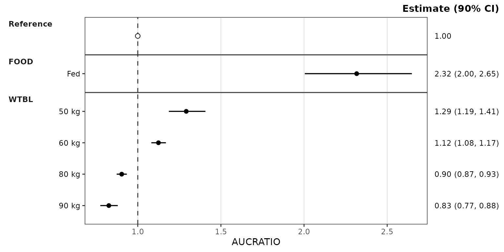
The vertical reference line defaults to
ref = "reference": the reference row’s estimate (1 for a
ratio, the reference exposure for a raw metric). Pass a number to place
it elsewhere, or NULL to suppress it.
Where the reference row is drawn
The plot above has no cov_level_ref, so the reference
row sits in the reference panel at the top. With
cov_level_ref, the reference row is drawn inside each
covariate panel under its reference label instead, so every panel shows
the reference next to the varied levels:
plot_forest(simsum, metric = "AUCRATIO", cov_level_ref = ref_levels)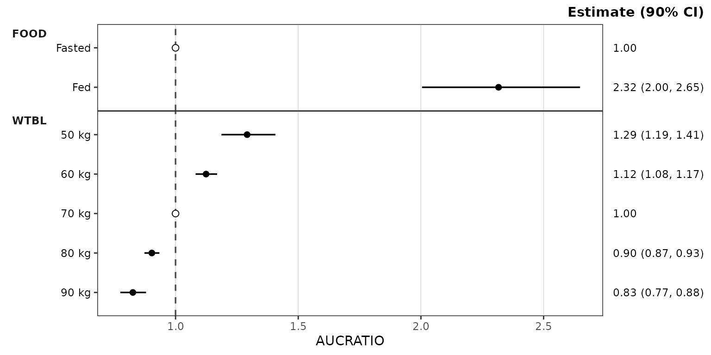
ref_layout switches between the two on the same summary
without re-aggregating: "distributed" (in each covariate
panel, the default when cov_level_ref is given) or
"consolidated" (the reference panel). The
layout column of $stats records which rows
each layout draws.
The equivalence band
ref_band is a numeric vector of length 2 specifying the
bounds of a shaded equivalence band. Its two values are read according
to ref_band_type:
-
"multiplicative"(default): the band isref * ref_band -
"additive": the band isref + ref_band -
"absolute": the band isref_band
A multiplicative band is symmetric only on a log axis, which can be
applied through the style with style_forest(logx = TRUE),
or by adding scale_x_log10() onto the returned
ggplot object.
plot_forest(simsum, metric = "AUCRATIO",
cov_level_ref = ref_levels,
ref_band = c(0.8, 1.25),
style = style_forest(logx = TRUE))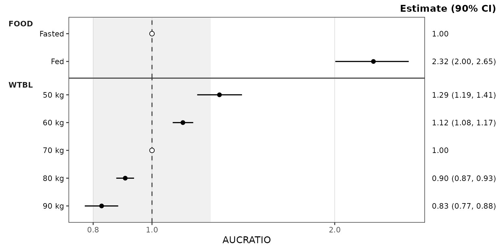
## Absolute exposure metricsThe same call works for an absolute metric. The reference line
resolves to the reference scenario’s exposure, and a multiplicative band
of c(0.8, 1.25) scales with it, so the plot reads the same
way as the ratio plot but on the exposure scale. The intervals are wider
than for the ratio.
plot_forest(simsum, metric = "AUC",
cov_level_ref = ref_levels,
ref_band = c(0.8, 1.25),
style = style_forest(logx = TRUE))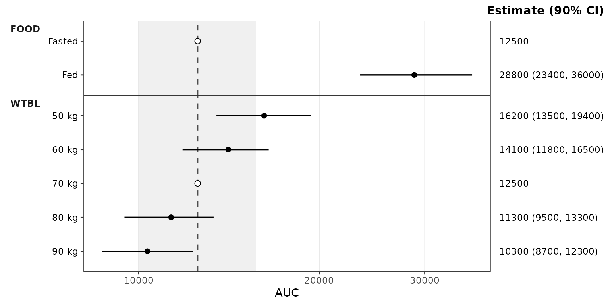
Difference metrics
Metrics on an additive scale, such as percent change from the reference, can be negative or zero, so they need a linear axis and an additive band.
The example derives a percent-change metric from the ratio draws and brackets the reference change of zero with the equivalent of the 0.8 to 1.25 bounds.
data_pchg <- simsum %>%
filter(metric == "AUCRATIO") %>%
mutate(metric = "AUCPCHG", value = 100 * (value - 1))
plot_forest(data_pchg,
cov_level_ref = ref_levels,
ref_band = c(-20, 25), ref_band_type = "additive")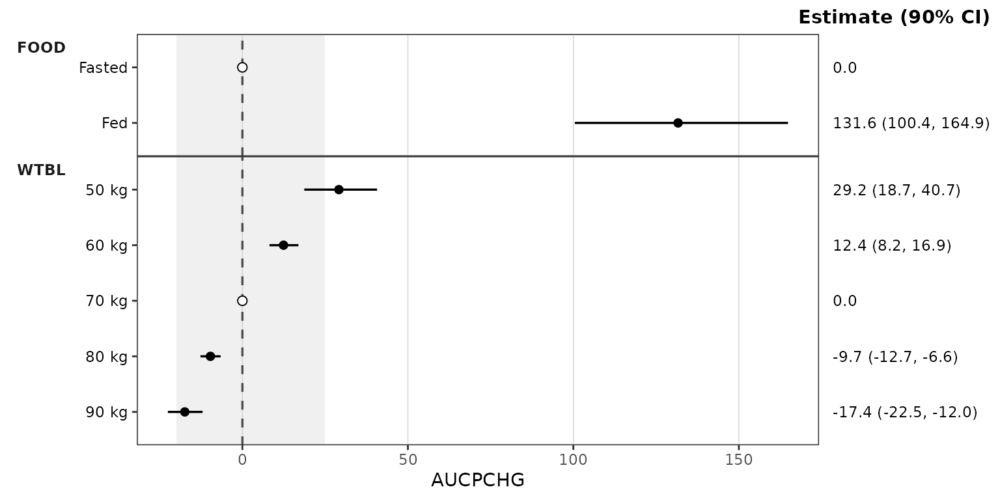
The estimate column header
The header above the estimate column is built from ci
(Estimate (90% CI)). It is the plot subtitle, right-aligned
so it sits on the top edge of the panels, and can be relabelled after
the fact with labs(subtitle = ).
For a ratio metric the conventional label names the quantity rather than the statistic, as in the example below
plot_forest(simsum, metric = "AUCRATIO",
cov_level_ref = ref_levels,
ref_band = c(0.8, 1.25),
style = style_forest(logx = TRUE)) +
labs(subtitle = "Ratio (90% CI)")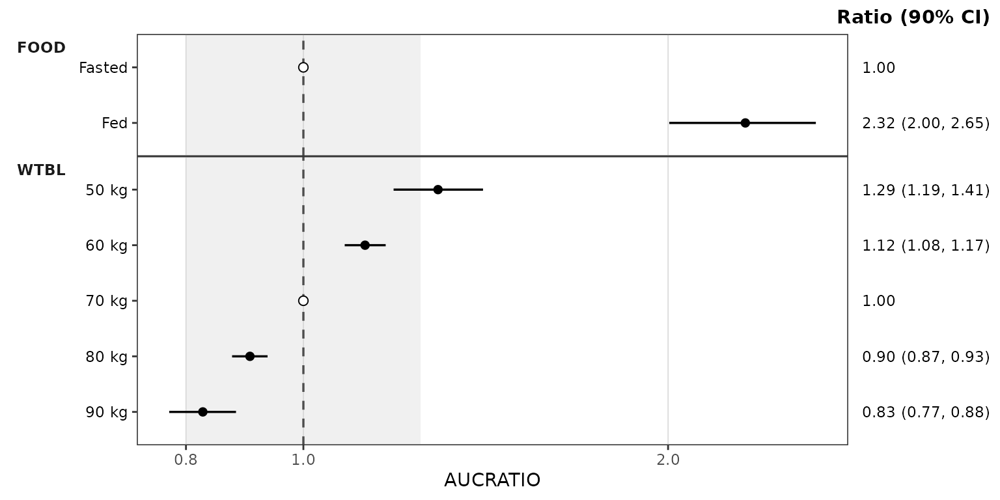
Reusing precomputed stats
plot_forest() also accepts a forest_stats
object directly. This skips the aggregation and is the natural way to
render several metrics from one summary, or to try different
ref_band and style settings on the same
data.
plot_forest(forest_obj, metric = "CMAXRATIO", ref_band = c(0.8, 1.25),
style = style_forest(logx = TRUE))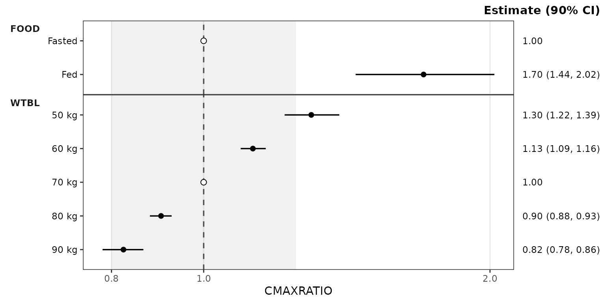
plot_forest(forest_obj, metric = "CMAX", ref_band = c(0.8, 1.25),
style = style_forest(logx = TRUE))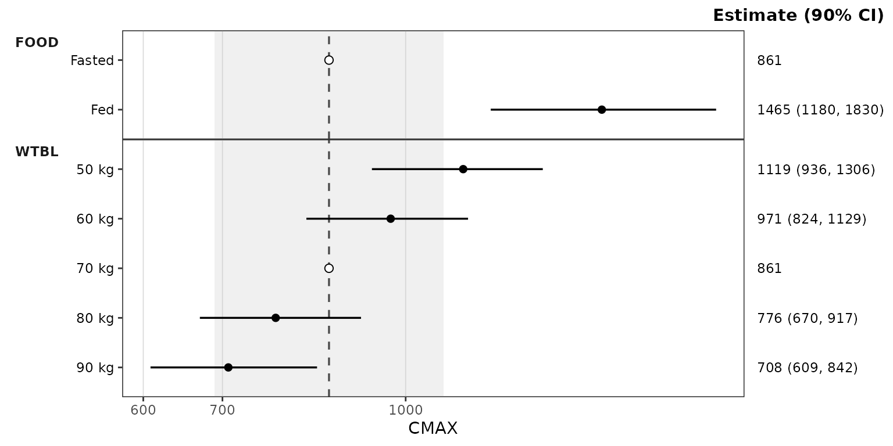
forest_obj was computed with cov_level_ref,
so ref_layout can switch it to the reference panel:
plot_forest(forest_obj, metric = "AUCRATIO", ref_layout = "consolidated",
ref_band = c(0.8, 1.25), style = style_forest(logx = TRUE))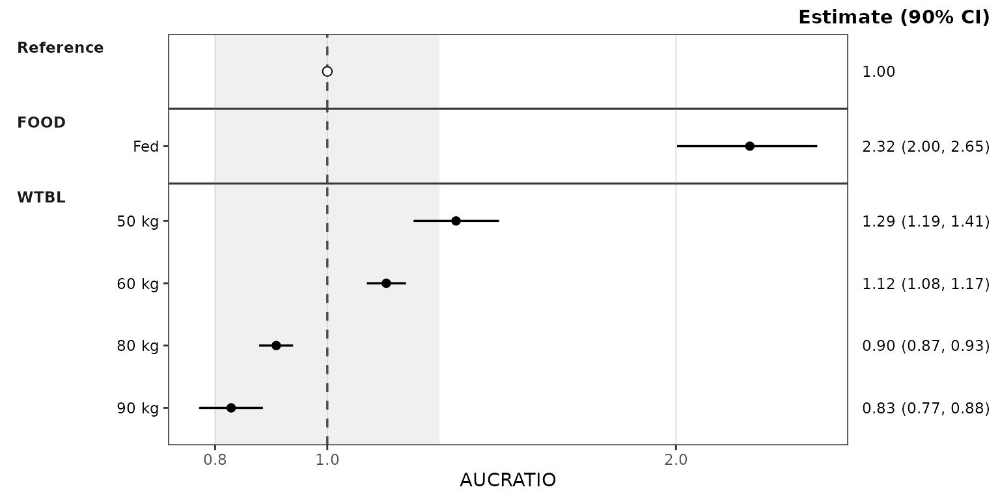
On a precomputed forest_stats, only the plot arguments
(metric, ref, ref_band,
ref_band_type, ref_layout,
show_rep, style) are accepted; summary
arguments such as ci abort with a pointer to
df_forest().
Inspecting the forest_stats object
summary() prints the configuration and one line per
metric: its draw count and each covariate’s levels in plot order, with
reference copies drawn in a covariate panel marked *.
summary(forest_obj)
#> <forest_stats>
#> stats: 64 rows x 13 columns
#> config: metric_name_var = metric, metric_value_var = value, cov_name_var = cov_name, cov_level_var = cov_level, ci = 0.9, sigdigits = 3, cov_name_ref = Reference, cov_level_ref = c(FOOD = "Fasted", WTBL = "70 kg")
#>
#> per metric:
#> [CMAX] n = 500 Reference | FOOD: Fasted*, Fed | WTBL: 50 kg, 60 kg, 70 kg*, 80 kg, 90 kg
#> [CMIN] n = 500 Reference | FOOD: Fasted*, Fed | WTBL: 50 kg, 60 kg, 70 kg*, 80 kg, 90 kg
#> [AUC] n = 500 Reference | FOOD: Fasted*, Fed | WTBL: 50 kg, 60 kg, 70 kg*, 80 kg, 90 kg
#> [CAVG] n = 500 Reference | FOOD: Fasted*, Fed | WTBL: 50 kg, 60 kg, 70 kg*, 80 kg, 90 kg
#> [CMAXRATIO] n = 500 Reference | FOOD: Fasted*, Fed | WTBL: 50 kg, 60 kg, 70 kg*, 80 kg, 90 kg
#> [CMINRATIO] n = 500 Reference | FOOD: Fasted*, Fed | WTBL: 50 kg, 60 kg, 70 kg*, 80 kg, 90 kg
#> [AUCRATIO] n = 500 Reference | FOOD: Fasted*, Fed | WTBL: 50 kg, 60 kg, 70 kg*, 80 kg, 90 kg
#> [CAVGRATIO] n = 500 Reference | FOOD: Fasted*, Fed | WTBL: 50 kg, 60 kg, 70 kg*, 80 kg, 90 kg
#> * reference copy in a covariate panel (ref_layout = "distributed")as.data.frame() returns the stats slot as a
plain data.frame, and is_forest_stats() tests
for the class (strict = TRUE also validates it).
Styling
Plot aesthetics are customized via the style argument
and the style_forest() preset, which returns a
ggstylekit::style_spec(). The series roles are:
-
point— the point estimate -
errorbar— the confidence interval line -
ref_point— the reference row’s estimate (an open circle by default) -
ref_line— the vertical reference line -
ref_band— the shaded equivalence band (fillandalphas)
style_forest()
#> <ggstylekit_style_spec>
#> colors black , black , black , grey30
#> fill white , grey80
#> linetypes solid , dashed
#> alphas 1.0, 1.0, 1.0, 1.0, 0.3
#> shapes 16, 21
#> sizes 2.2, 2.2
#> linewidths 0.6, 0.6
#> point_color NULL
#> point_alpha NULL
#> point_size NULL
#> point_shape NULL
#> line_color NULL
#> line_alpha NULL
#> line_linetype NULL
#> line_linewidth NULL
#> line_fill NULL
#> errorbar_color NULL
#> errorbar_alpha NULL
#> errorbar_linetype NULL
#> errorbar_linewidth NULL
#> errorbar_width NULL
#> errorbar_fill NULL
#> bar_fill NULL
#> bar_color NULL
#> bar_alpha NULL
#> bar_linewidth NULL
#> area_fill NULL
#> area_color NULL
#> area_alpha NULL
#> area_linewidth NULL
#> box_fill NULL
#> box_color NULL
#> box_alpha NULL
#> box_linewidth NULL
#> title NULL
#> xlabel NULL
#> ylabel NULL
#> caption NULL
#> xlims NULL
#> ylims NULL
#> logx NULL
#> logy NULL
#> xbreaks NULL
#> ybreaks NULL
#> xminor_breaks NULL
#> yminor_breaks NULL
#> xtick_labels NULL
#> ytick_labels NULL
#> xorder NULL
#> yorder NULL
#> equal_axis NULL
#> legends NULL
#> legend.position none
#> legend.title.position NULL
#> legend_nrow NULL
#> legend_ncol NULL
#> legend.title.hjust NULL
#> caption_hjust NULL
#> fill_alpha NULL
#> facet NULL
#> facet_scales NULL
#> facet_nrow NULL
#> facet_ncol NULL
#> theme <ggplot2 theme>A typical override example is provided below using the style to change the point sizes and the colors of the reference line and band:
plot_forest(forest_obj, metric = "AUCRATIO", ref_band = c(0.8, 1.25),
style = style_forest(shapes = c(point = 18),
sizes = c(point = 3),
colors = c(ref_line = "firebrick"),
fill = c(ref_band = "steelblue"),
alphas = c(ref_band = 0.15),
logx = TRUE))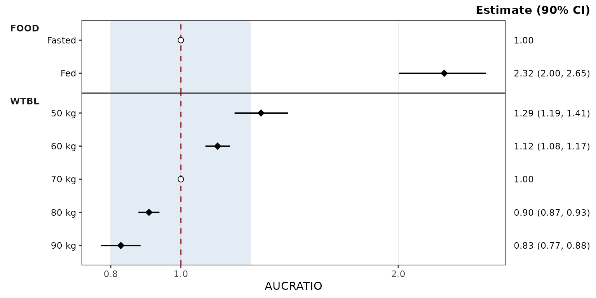
Per-covariate coloring
Coloring by covariate is opt-in through the same colors
map: add entries keyed by covariate name.
When at least one plotted covariate is named, points and error bars are colored by covariate and the legend is suppressed, since the panel strips already label each covariate. Covariates without an entry take colours from the house palette.
plot_forest(forest_obj, metric = "AUCRATIO", ref_band = c(0.8, 1.25),
style = style_forest(colors = c(FOOD = "darkgreen", WTBL = "darkblue"),
logx = TRUE))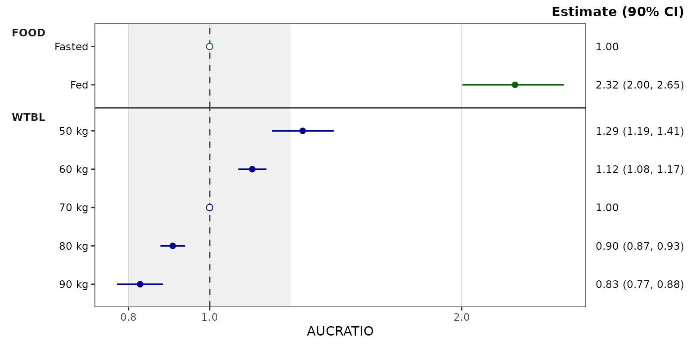
The facet layout is fixed by the renderer (facet_grid()
rows by covariate, strips outside the y-axis), so the style’s
facet* fields are ignored.
The estimate column is right-hand axis text styled through the
theme’s axis.text.y.right element, and its header is the
plot subtitle (plot.subtitle). The x-axis label defaults to
the metric and can be replaced with the style’s xlabel
field or labs(x = ); a title can be added with the
title field or labs(title = ).
The preset examples below share one log x-axis
(scale_x_log10() with fixed limits) so the looks can be
compared directly.
pmforest styling
style_forest_pmforest() reproduces the default look of
Metrum’s pmforest
package: diamonds filled per covariate from the ggplot2 hue palette with
black outlines, a dot-dash reference line, and grey vertical gridlines.
It is a regular preset, so its fields can be overridden the same
way.
plot_forest(forest_obj, metric = "AUCRATIO", ref_band = c(0.8, 1.25),
style = style_forest_pmforest()) +
scale_x_log10(limits = c(0.5, 5), breaks = c(0.5, 0.8, 1, 1.25, 2, 3, 4, 5))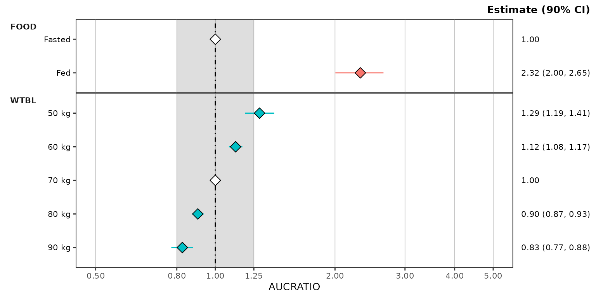
coveffectsplot styling
style_forest_coveffectsplot() reproduces the default
look of the forest_plot() function of the coveffectsplot
package: blue points on thick blue intervals, a dashed reference line,
grey gridlines on both axes, and grey-filled covariate strips.
plot_forest(forest_obj, metric = "AUCRATIO", ref_band = c(0.8, 1.25),
style = style_forest_coveffectsplot()) +
scale_x_log10(limits = c(0.5, 5), breaks = c(0.5, 0.8, 1, 1.25, 2, 3, 4, 5))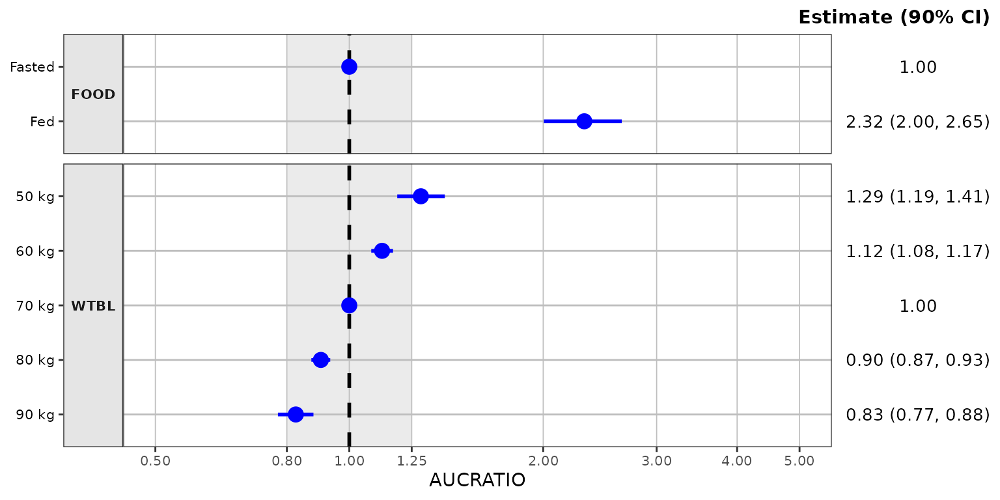
PMXForest styling
style_forest_pmxforest() reproduces the default look of
the forestPlot() function of Pharmetheus’ PMXForest package,
the forest plot of the FREM workflow: black points on uncapped black
intervals, a dotted reference line, and the grey
theme_grey() panel.
plot_forest(forest_obj, metric = "AUCRATIO", ref_band = c(0.8, 1.25),
style = style_forest_pmxforest()) +
scale_x_log10(limits = c(0.5, 5), breaks = c(0.5, 0.8, 1, 1.25, 2, 3, 4, 5))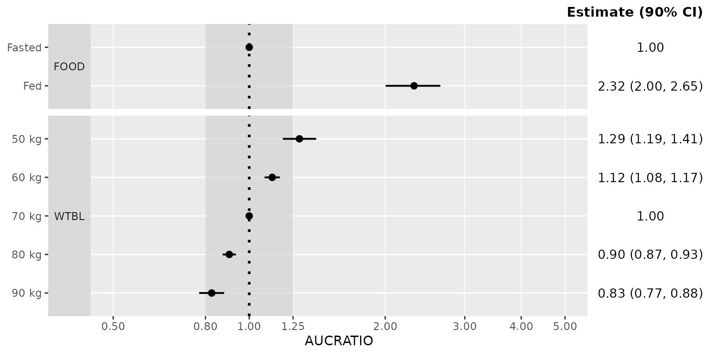
Pumas styling
style_forest_pumas() reproduces the look of the
table_forest_plot() function of Pumas:
diamonds and capped error bars colored per covariate, a dashed reference
line, and an open panel without gridlines.
plot_forest(forest_obj, metric = "AUCRATIO", ref_band = c(0.8, 1.25),
style = style_forest_pumas()) +
scale_x_log10(limits = c(0.5, 5), breaks = c(0.5, 0.8, 1, 1.25, 2, 3, 4, 5))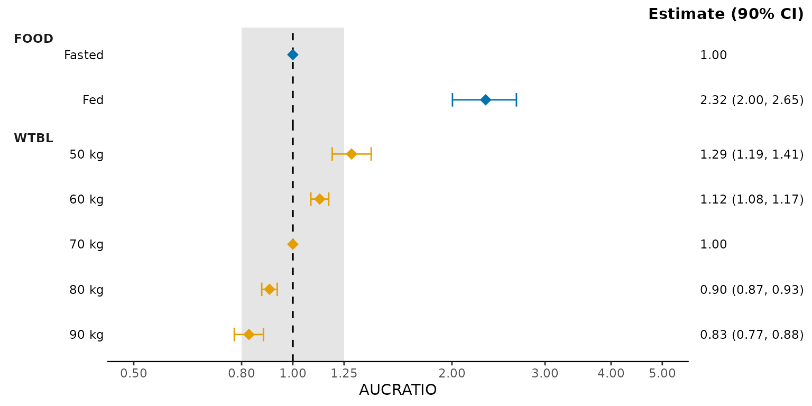
For a deeper treatment of the styling system —
style_spec() fields, per-role maps, and post-hoc
reveal() — see the Plot Styling
and Aesthetics vignette.
See also
-
Dose-Proportionality Workflow —
the sibling dual-mode pipeline (
df_doseprop()/plot_doseprop()) for power law regression of exposure versus dose. -
Visual Predictive Check Workflow —
simulation-based model evaluation with
df_vpcstats()andplot_vpc_cont(). -
Plot Styling and Aesthetics — the
style_*()presets,style_spec()fields and per-role maps, and post-hocreveal()for customizing plot output.